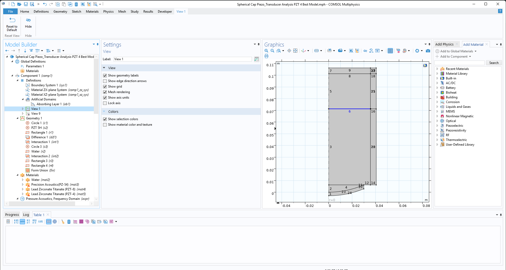
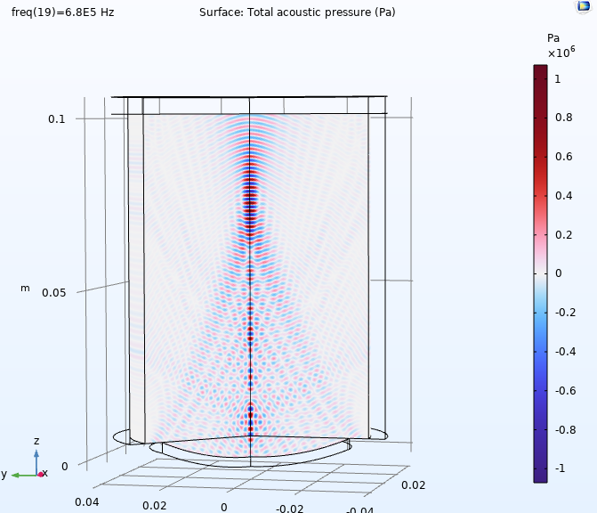
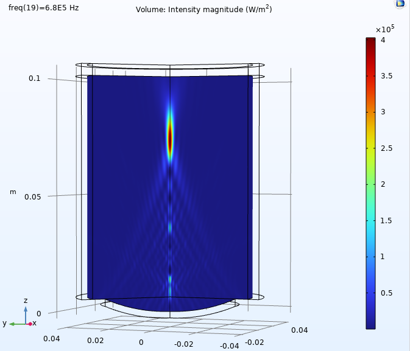
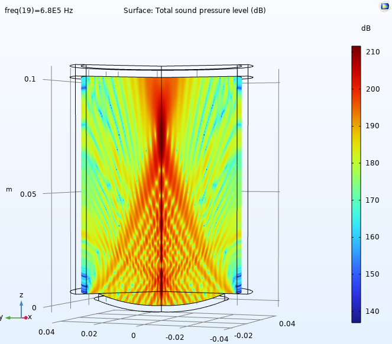

Modeling Acoustic Field Propagation and Nonlinear Effects
This work presents the numerical simulation of a spherical cap piezoelectric transducer for focused ultrasound applications. The study focuses on analyzing pressure distribution, intensity profiles, and nonlinear acoustic effects using COMSOL Multiphysics.

The transducer is modeled as a spherical cap structure submerged in a water domain. The geometry is simplified using an axisymmetric approximation to reduce computational cost while preserving the focusing behavior.

The pressure field shows the propagation of acoustic waves from the transducer surface into the medium. The interference patterns and wavefront curvature indicate focusing behavior.
At higher frequencies, stronger confinement of the acoustic beam is observed near the focal region. The oscillatory pattern corresponds to the compressional and rarefaction phases of the wave.

The intensity distribution highlights the focal region where acoustic energy is concentrated. A sharp high-intensity zone is observed along the axis, confirming effective focusing.
This is particularly important for applications such as High-Intensity Focused Ultrasound (HIFU), where energy localization is critical.

The SPL plot (in dB) provides a logarithmic representation of pressure variations. It highlights regions of strong acoustic radiation and attenuation.
The propagation of high-intensity ultrasound in nonlinear media is governed by the Westervelt equation:
∇²p − (1/c²) ∂²p/∂t² = (β / ρc⁴) ∂²(p²)/∂t² + δ ∇²(∂p/∂t)
where:
The equation accounts for:
The piezoelectric behavior of the transducer is modeled using constitutive equations expressed in Voigt notation.
The coupled electromechanical equations are:
S = s^E T + d^T E D = d T + ε^T E
where:
In Voigt notation, tensor quantities are reduced into matrix form, enabling efficient numerical implementation within FEM solvers like COMSOL.
The simulation successfully demonstrates the focusing characteristics of a spherical cap ultrasound transducer. The results show strong agreement with theoretical expectations of beam focusing and intensity localization.
Future work will include nonlinear simulations using full Westervelt modeling and experimental validation using hydrophone-based scanning setups.